「地図」といえば紙媒体に印刷することを前提とした出力が一般的です。「地図」は現場で地物情報の状態や関係性を確認するために利用することが一般的です。しかし地図の情報量を増やすことは紙面を増やすことと同義であり、必要とする情報に応じて異なる地図を用意しなければなりません。
従来の紙地図に対して、コンピュータで見る地図（ここでは電子地図と呼びます。）は多くの点で異なります。地図を利用する人が興味・関心のある地物の情報を選別したり、縮尺を自在に変更したりといった操作が可能です。
ここではまず、Rの標準作図機能による地図の作成を行います。次にggplot2パッケージを使った例を紹介します。これらはいずれも印刷や画面上での表示に向いた静的な地図の作成方法です。次にウェブベースでのインタラクティブな操作が可能な空間データのマッピングについて学びます。
地図表現には表示媒体の違いだけでなく、興味のあるデータを表現するために多様な種類が提案されてきています。全てを扱うことはできませんが、いくつかの例を紹介します。
データ操作や処理を行うので、前章を先に読んでいてください。
利用するデータ、パッケージ
この章では
- 国土数値情報の行政区域データ
- e-Statで公開される都道府県・市区町村別統計表 (2005(H17)、2010(H22)、2015(H27))より人口数のデータ
library(sf)
library(dplyr)
library(ggplot2)
library(patchwork)
2
3
4
岡山県の行政区域データを用意します。
また統計データとして、平成17年、22年、27年に行われた国勢調査による人口データを使います。このデータはe-statよりダウンロード可能です。
library(jpndistrict)
sf_pref33 <-
jpn_pref(33, district = TRUE)
df_h17to27_pops <-
readr::read_rds(here::here("data-raw", "population_h17-h22.rds"))
2
3
4
5
6
7
glimpse(sf_pref33)
## Observations: 30
## Variables: 5
## $ pref_code <chr> "33", "33", "33", "33", "33", "33", "33", "33", "33...
## $ prefecture <chr> "岡山県", "岡山県", "岡山県", "岡山県", "岡山県", "岡山県", "岡山県", "岡...
## $ city_code <chr> "33101", "33102", "33103", "33104", "33202", "33203...
## $ city <chr> "岡山市 北区", "岡山市 中区", "岡山市 東区", "岡山市 南区", "倉敷市", "津山市...
## $ geometry <GEOMETRY [°]> POLYGON ((133.9098 34.948, ..., MULTIPOLYG...
2
3
4
5
6
7
glimpse(df_h17to27_pops)
## Observations: 6,363
## Variables: 6
## $ year <dbl> 2005, 2005, 2005, 2005, 2005, 2005, 2005, 2005, 200...
## $ pref_code <chr> "00", "01", "01", "01", "01", "01", "01", "01", "01...
## $ city_code <chr> "00000", "01000", "01100", "01101", "01102", "01103...
## $ city_type <chr> "a", "a", "1", "0", "0", "0", "0", "0", "0", "0", "...
## $ city <chr> "全国", "北海道", "札幌市", "札幌市 中央区", "札幌市 北区", "札幌市 東区", ...
## $ population <dbl> 127767994, 5627737, 1880863, 202801, 272877, 253996...
2
3
4
5
6
7
8
base
plot(sf_pref33)
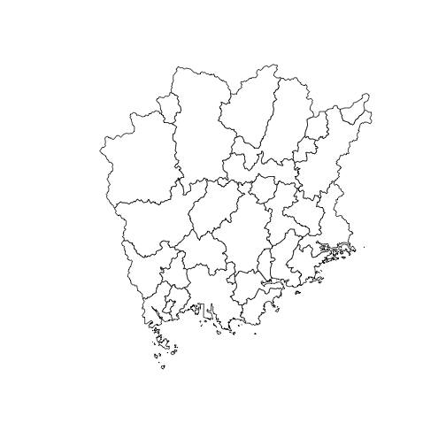
sfオブジェクトに対してplot()を適用した場合、デフォルトでは全ての属性について作図を行います。
そのため、地物の形状あるいは特定の属性について確認したい際には次のようにします。[演算子で対象の属性を含む列を指定するか、st_geometry()を使います。
sf_pref33 %>%
st_geometry() %>%
plot(col = "white")
2
3

options(sf_max.plot =)で描画される数を制御することも可能です。これによりセッションが終了するまで設定を維持できます。ただし、この設定が予期せぬ結果を招くこともあるので、描画対象は都度指定するようにした方が良いでしょう。
options(sf_max.plot = 3)
sf_pref33 %>%
plot()
2
3
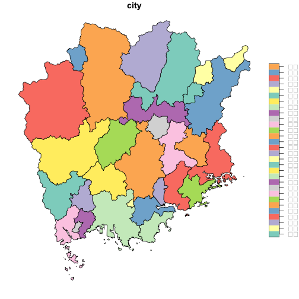
sf_pref33[, "city"] %>%
plot()
2
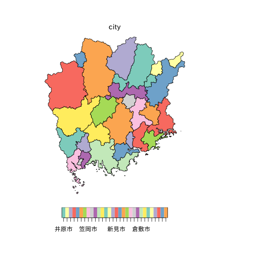
ここで日本語が文字化けする時にはpar()による作図パラメータの調整を行う必要があります。
par(family = "IPAexGothic",
oma = c(3, 3, 3, 6.5),
mar = c(2, 1, 1, 2))
sf_pref33[, "city"] %>%
plot()
2
3
4
5

凡例は標準で図の右側に配置されますが、これはkey.pos引数で位置を調整できます。
# 1は下部、2は右側、3は上部、4は右側
sf_pref33[, "city"] %>%
plot(key.pos = 2)
2
3
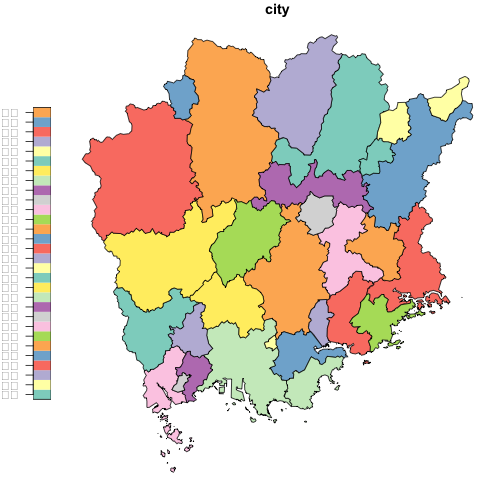
ggplot2
ggplot2にはsfパッケージが扱う地理空間オブジェクトを描画する専用の関数が用意されています。geom_sf()は引数dataにsf、sfc、sfgを与えることで、地物の描画を行います。
x <- st_point(c(1, 1))
ggplot() +
geom_sf(data = x)
2
3
4
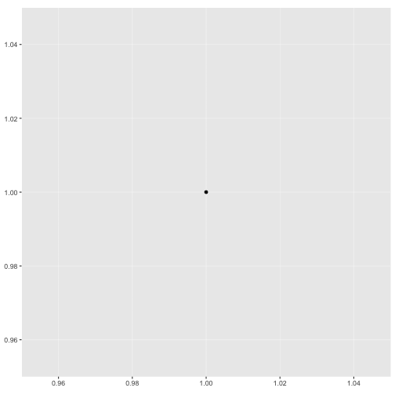
ggplot() +
geom_sf(data = sf_pref33, aes(fill = city_code)) +
# 経緯度線を描画しない
coord_sf(datum = NA) +
guides(fill = FALSE) +
# 背景色を白にする
theme_void()
2
3
4
5
6
7
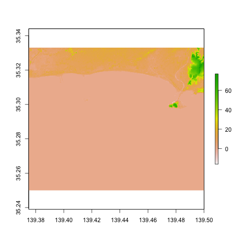
geom_sf()では凡例の出力を調整するための引数show.legendが用意されています。この凡例では、既定値にNAが与えられていますが、aes()でマッピングを指定した場合、凡例が与えられます。またこの時の凡例は"polygon"ですが、"line"または"point"と明示的に指定することが可能です。
sf_kitaku <-
sf_pref33[1, "geometry"] %>%
st_cast("MULTILINESTRING") %>%
st_cast("LINESTRING") %>%
mutate(id = letters[1])
# 凡例を描画しない
p1 <-
ggplot() +
geom_sf(data = sf_kitaku,
aes(col = id),
show.legend = FALSE)
# 凡例を描画する (polygonとして扱われる)
p2 <-
ggplot() +
geom_sf(data = sf_kitaku,
aes(col = id))
# 凡例を描画する (種類を指定する)
p3 <-
ggplot() +
geom_sf(data = sf_kitaku,
aes(col = id),
show.legend = "line")
p1 + p2 + p3 +
plot_layout(ncol = 3)
2
3
4
5
6
7
8
9
10
11
12
13
14
15
16
17
18
19
20
21
22
23
24
25
26
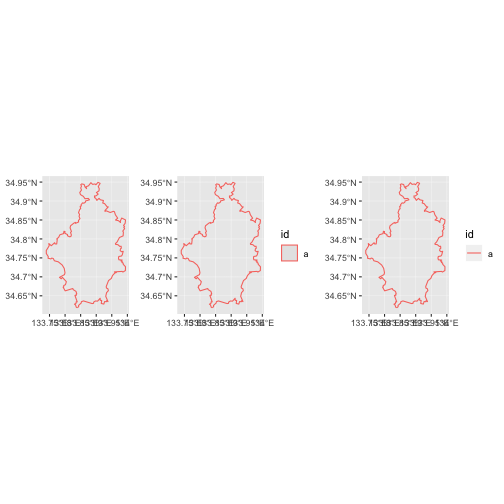
set.seed(123)
ggplot() +
geom_sf(data = sf_pref33, fill = "white") +
geom_sf(data =
sf_pref33 %>%
st_sample(size = 10) %>%
st_sf(id = letters[seq(1, 7)]),
aes(color = id),
show.legend = "point") +
guides(fill = FALSE)
2
3
4
5
6
7
8
9
10
11
## although coordinates are longitude/latitude, st_intersects assumes that they are planar
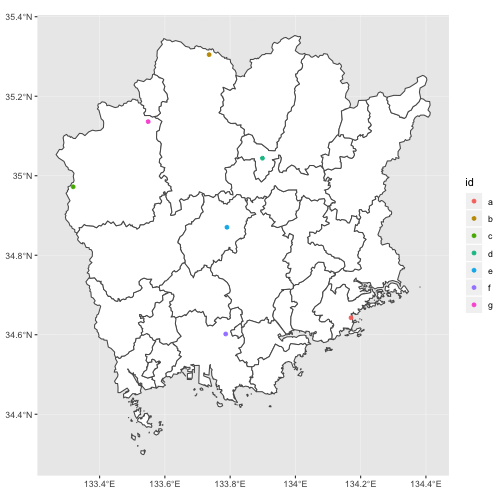
Error in grid.Call(C_textBounds, as.graphicsAnnot(xx, x$y, : polygon edge not found
というエラーがでることがあります。
何度か描画しているとエラーが発生せずに描画が行われます。
facet
df_pops_pref33 <-
df_h17to27_pops %>%
filter(city != "全国") %>%
filter(pref_code == "33", city_type %in% c(1, 2, 3))
2
3
4
空間データと統計データの紐付けは下記のように行います。まず、共通する「キー」と呼ばれる列を作ります。
sf_pref33 <-
sf_pref33 %>%
mutate(city_code = if_else(stringr::str_detect(city, "[[:space:]].+区$"),
stringr::str_replace(city_code, ".{1}$", "0"),
city_code),
city = stringr::str_remove(city, "[[:space:]].+区$"),
city = stringr::str_remove(city, "^.+郡[[:space:]]")) %>%
group_by(city_code, city) %>%
tidyr::nest()
2
3
4
5
6
7
8
9
city_union <- function(x) {
x %>%
lwgeom::st_make_valid() %>%
sf::st_union(by_feature = FALSE) %>%
sf::st_transform(crs = 4326) %>%
sf::st_cast("POLYGON") %>%
purrr::map(
~ .x[1]
) %>%
sf::st_multipolygon() %>%
sf::st_sfc(crs = 4326)
}
sf_pref33 <-
sf_pref33 %>%
transmute(city_code,
city,
geometry = purrr::map(data, ~ city_union(.x)) %>%
purrr::reduce(c)) %>%
st_sf()
2
3
4
5
6
7
8
9
10
11
12
13
14
15
16
17
18
19
20
# 合併により統合された町
df_pops_pref33 %>%
anti_join(sf_pref33, by = c("city_code",
"city"))
2
3
4
## # A tibble: 7 x 6
## year pref_code city_code city_type city population
## <dbl> <chr> <chr> <chr> <chr> <dbl>
## 1 2005 33 33201 2 岡山市 674746
## 2 2005 33 33303 3 建部町 6524
## 3 2005 33 33321 3 瀬戸町 14902
## 4 2005 33 33345 3 佐伯町 3931
## 5 2005 33 33442 3 金光町 12341
## 6 2005 33 33443 3 鴨方町 18475
## 7 2005 33 33444 3 寄島町 6511
2
3
4
5
6
7
8
9
10
# 市町村合併による結果を適用。人口数を再計算
df_pops_pref33 <-
df_pops_pref33 %>%
mutate(city_code = recode(
city_code,
`33201` = "33100",
`33303` = "33100",
`33321` = "33100",
`33345` = "33346",
`33442` = "33216",
`33443` = "33216",
`33444` = "33216",
)) %>%
group_by(year, city_code) %>%
mutate(population = sum(population)) %>%
ungroup()
df_pops_pref33 <-
sf_pref33 %>%
inner_join(df_pops_pref33, by = c("city_code",
"city"))
2
3
4
5
6
7
8
9
10
11
12
13
14
15
16
17
18
19
20
21
ggplot() +
geom_sf(data = df_pops_pref33, aes(fill = population)) +
scale_fill_viridis_c() +
facet_wrap(~ year)
2
3
4

階級分け
df_pops_pref33_cls <-
df_pops_pref33 %>%
group_by(year) %>%
mutate(cls = dplyr::ntile(population, 9)) %>%
ungroup()
ggplot() +
geom_sf(data = df_pops_pref33_cls,
aes(fill = population),
color = "white", size = 0.1) +
scale_fill_viridis_c(guide = guide_legend(title = "Population")) +
facet_wrap(~ year)
2
3
4
5
6
7
8
9
10
11
12
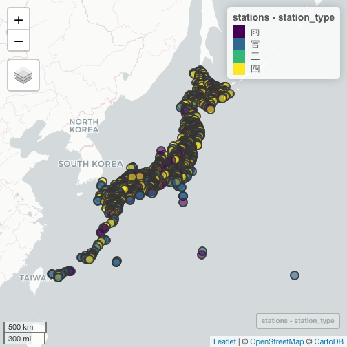
ggplot() +
geom_sf(data = df_pops_pref33_cls, aes(fill = as.character(cls)),
color = "white", size = 0.1) +
scale_fill_viridis_d(guide = guide_legend(title = "Class",
reverse = TRUE)) +
theme_light() +
facet_wrap(~ year)
2
3
4
5
6
7
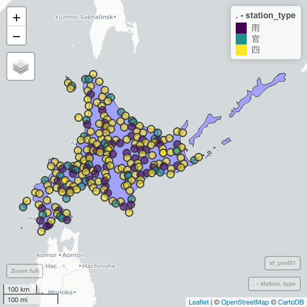
tmapによる主題図作成
library(tmap)
qtm(sf_pref33)

tm_shape(sf_pref33,
projection = "longlat") +
tm_polygons()
2
3

tmap_mode("view")
tm_shape(sf_pref33) +
tm_fill("city_code", palette = sf.colors(20))
2
3
4
qtm(sf_pref33)
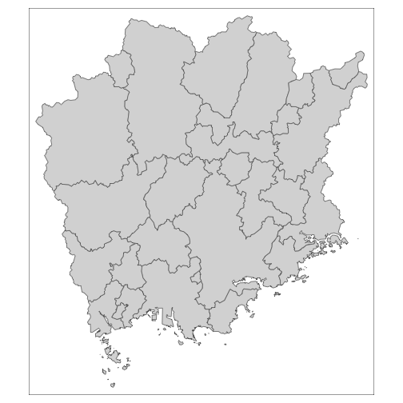
tm_shape(sf_pref33) +
tm_polygons("city",
title = "",
size = 0.2,
bg.color = "white",
border.col = "gray50",
border.alpha = .5,
bg.alpha = 0.25,
outer.margins = c(0.1, 0.1, 0.2, 0.1)) +
tm_legend(position = c("right", "bottom"),
inner.margins = c(0.1, 0.05, 0.01, 0.05)) +
tm_layout(frame = FALSE,
title = "岡山県",
fontfamily = "IPAexGothic")
2
3
4
5
6
7
8
9
10
11
12
13
14
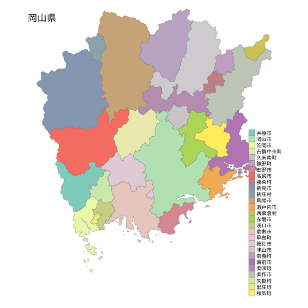
geofacetによる空間位置関係を考慮したグラフ
library(geofacet)
人口数のデータ
city_typeを元に47都道府県のデータに限定します。
df_h17to27_pops_target <-
df_h17to27_pops %>%
filter(city != "全国") %>%
filter(city_type == "a")
2
3
4
# 各県のデータが3回の調査回数分あることを確認
df_h17to27_pops_target %>%
count(pref_code) %>%
filter(!between(n, 3, 3))
2
3
4
## # A tibble: 0 x 2
## # ... with 2 variables: pref_code <chr>, n <int>
2
元のデータにありますが、前回の調査時からの増減を示す列 (increase... TRUEである場合に増加を示す) を作成します。
df_h17to27_pops_target <-
df_h17to27_pops_target %>%
arrange(pref_code, year) %>%
group_by(pref_code) %>%
mutate(increace = if_else(population > lag(population), TRUE, FALSE)) %>%
ungroup() %>%
arrange(year, pref_code) %>%
mutate(name = rep(jp_prefs_grid1$name, 3))
2
3
4
5
6
7
8
p_base <-
df_h17to27_pops_target %>%
ggplot(aes(year, population)) +
geom_point(aes(color = increace)) +
scale_color_manual(values = c("TRUE" = viridisLite::viridis(2)[1],
"FALSE" = viridisLite::viridis(2)[2]),
na.value = "gray") +
geom_line(color = "gray") +
guides(color = guide_legend(title = "人口の増加")) +
scale_x_continuous(breaks = c(2005, 2010, 2015)) +
scale_y_continuous(labels = scales::comma,
breaks = c(500000, 1500000, 3000000)) +
theme_light() +
theme(legend.position = "top",
legend.direction = "horizontal",
axis.text = element_text(size = 5.2),
strip.text.x = element_text(size = 7.6))
2
3
4
5
6
7
8
9
10
11
12
13
14
15
16
17
空間配置を考慮しない図
p_base +
facet_wrap(~ pref_code,
scales = "free_y")
2
3
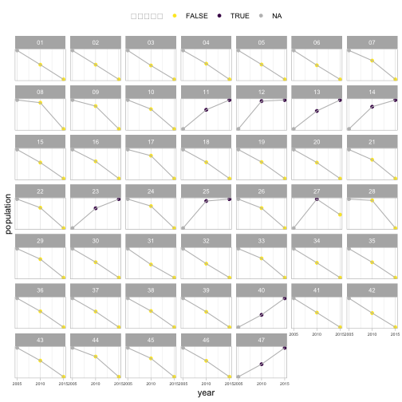
geofacetを利用した図
p_base +
facet_geo(~ name,
grid = "jp_prefs_grid1",
scales = "free_y")
2
3
4
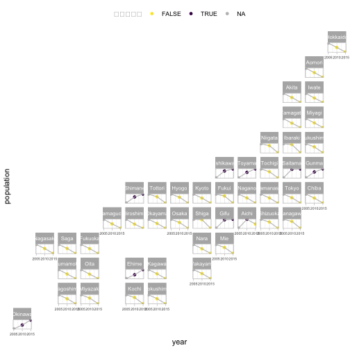
インタクティブに動かせるマップ
mapedit / mapview
QGISやArcGISのような高機能なGIS機能はありませんが、
地理空間データを閲覧したり、簡単なデータの作成・加工を行うのに十分な機能を備えています。
インタラクティブに扱うためのパッケージです。
library(mapview)
mapview()を実行すると、leafletベースの画面が表示されます。これは興味のある対象へズームしたり表示する場所を変更したりといった操作が可能です。
mapview()
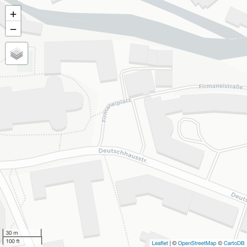
しかし表示されているのはベースタイルの情報のみです。ここに用意した地理空間データをマッピングするにはmapview()の引数にオブジェクトを渡して実行します。
mapview(stations)
全国の観測所の位置が地図上にマッピングされました。各ポイントのマーカーを選択すると、地物の属性情報を確認できます。またzcol引数に属性の名前を与えて、表示項目の塗り分けを行うことが可能です。次の例は、stationsデータの観測所の種類を記録したstation_typeの列を基準に地物の塗り分けを行うものです。
mapview(stations, zcol = "station_type")
塗り分けを行っても、このデータはポイントの数が多すぎて詳細を把握することができません。しかしmapviewパッケージは静的な地図の描画ではなくて動的な地図を提供することを思い出してください。例えばもしあなたが北海道の観測所に興味がある場合、対象を拡大表示すれば良いのです。しかし、もし関心が北海道の観測所であることが初めから決まっているのであれば、表示するデータをあらかじめ北海道のものに限定しておくという処理が適切でしょう。
mapviewでは一般的なGISアプリケーションのように、レイヤーとして地理空間データを重ね合わせることができます。ここでは北海道内の観測所データと、北海道の行政区域データという2つのレイヤーを用意してその例を示します。
library(dplyr)
library(jpndistrict)
sf_pref01 <-
jpn_pref("01", district = FALSE)
m <-
stations %>%
dplyr::filter(pref_code == "01") %>%
mapview(zcol = "station_type") +
mapview(sf_pref01)
m
2
3
4
5
6
7
8
9
10
11
12
13

mapedit::drawFeatures(mapview(sf_pref01))
- geometryを作成する
- マーカーを配置する
- 編集（位置の修正）、削除
作業を終えたら "Done" を押してアプリケーションを停止させましょう。アプリケーション上で作成したデータは.Last.valueに保存されています。再利用のために名前つきのオブジェクトに代入しておきましょう。（ここに保存されるデータは新しい処理を実行すると上書きされるので注意です。）
my_features <-
.Last.value
my_features
# Simple feature collection with 5 features and 3 fields
# geometry type: POINT
# dimension: XY
# bbox: xmin: 141.0315 ymin: 42.88402 xmax: 143.9648 ymax: 44.22874
# epsg (SRID): 4326
# proj4string: +proj=longlat +datum=WGS84 +no_defs
# X_leaflet_id feature_type radius geometry
# 1 282 marker NA POINT (143.9648 43.79404)
# 2 288 marker NA POINT (142.1851 42.88401)
# 3 295 marker NA POINT (142.1521 44.22874)
# 4 357 circlemarker 10 POINT (142.2015 43.71508)
# 5 373 circlemarker 10 POINT (141.0315 42.91553)
2
3
4
5
6
7
8
9
10
11
12
13
14
15
16
レイヤーの追加は、 + mapview()の形式で実行します。
station_point_pref01 <-
stations %>%
dplyr::filter(pref_code == "01")
mapview(
list(station_point_pref01, sf_pref01),
zcol = list("station_type", NULL),
legend = list(TRUE, FALSE),
homebutton = list(FALSE, TRUE))
2
3
4
5
6
7
8
9

レイヤーの表示切り替え、ホーム位置への移動、全体表示（ズームレベルのリセット）
mapviewパッケージの機能について理解を深めるために、パッケージの実装面を学んでいきましょう。mapview()の返り値はS4クラスのオブジェクトです。object、mapという2つのスロットからなります。
str(m, max.level = 3)
## Formal class 'mapview' [package "mapview"] with 2 slots
## ..@ object:List of 2
## .. ..$ :sfc_POINT of length 228; first list element: 'XY' num [1:2] 141.9 45.5
## .. ..$ :sfc_MULTIPOLYGON of length 1; first list element: List of 239
## .. .. ..- attr(*, "class")= chr [1:3] "XY" "MULTIPOLYGON" "sfg"
## ..@ map :List of 8
## .. ..$ x :List of 4
## .. ..$ width : NULL
## .. ..$ height : NULL
## .. ..$ sizingPolicy :List of 6
## .. ..$ dependencies :List of 4
## .. ..$ elementId : NULL
## .. ..$ preRenderHook:function (widget)
## .. ..$ jsHooks :List of 1
## .. ..- attr(*, "class")= chr [1:2] "leaflet" "htmlwidget"
## .. ..- attr(*, "package")= chr "leaflet"
2
3
4
5
6
7
8
9
10
11
12
13
14
15
16
objectスロットにはマッピングに使われるデータが保存されています。
m@object[[1]]
## Geometry set for 228 features
## geometry type: POINT
## dimension: XY
## bbox: xmin: 139.4167 ymin: 41.41667 xmax: 145.75 ymax: 45.51667
## epsg (SRID): 4326
## proj4string: +proj=longlat +datum=WGS84 +no_defs
## First 5 geometries:
2
3
4
5
6
7
## POINT (141.9333 45.51667)
## POINT (141.6667 45.4)
## POINT (141.045 45.3)
## POINT (141.8 45.4)
## POINT (142.1667 45.33333)
多様なオプション
mapview(sf_pref01,
col.regions = "magenta")
mapview(station_point_pref01,
zcol = "station_type",
col.regions = c("orange", "violet", "blue", "cyan"),
popup = popupTable(station_point_pref01,
zcol = c("station_name",
"elevation",
"address")),
legend = TRUE,
label = NULL,
homebutton = TRUE)
2
3
4
5
6
7
8
9
10
11
12
13
ベースマップの変更
# これらのタイルがベースマップとして利用可能
mapviewGetOption("basemaps")
2
## [1] "CartoDB.Positron" "CartoDB.DarkMatter" "OpenStreetMap"
## [4] "Esri.WorldImagery" "OpenTopoMap"
2
# ref) https://leaflet-extras.github.io/leaflet-providers/preview/
mapview(sf_pref01, map.types = "Esri.WorldImagery")
保存
mapview::mapshot()を使います。これはwebshotパッケージのラッパーとして機能する関数です。
deckgl
Uberが開発に携わるオープンソース
deck.gl
library(mapdeck)
# mapdeck::set_token()
2
3
plotly
地図タイルを使わない
地図以外のグラフが描画できる
[WIP]
library(plotly)
plot_geo(sf_pref01)
2
3
アニメーショングラフ
- 気象データ
- 人口データ、時系列?
library(gganimate)